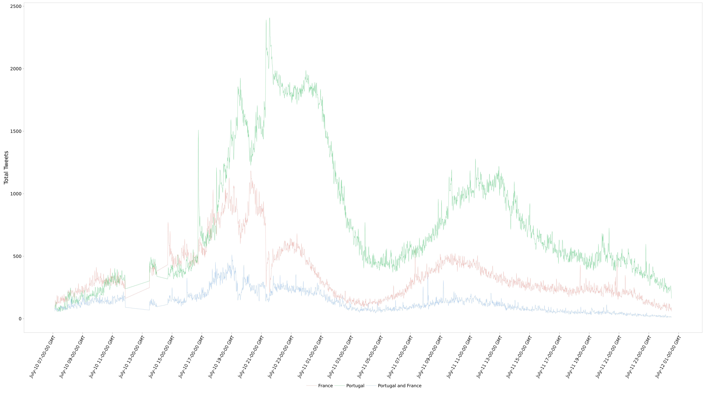

Portugal vs. France Finals | 10-Jul-2016
Objective
To describe the behaviour of tweets about Portugal and France before, during, and after the 2016 Euro Finals match.
Rationale
Twitter arguably has the potential to describe the global human thought psyche regarding major sporting events such as the Euro 2016. Since the Finals match is a highly anticipated major sporting event, there may be a large surge of tweets containing the terms “Portugal” and “France” around the event time period.
Methods
The Tweepy python library was used to access and mine tweets from the Twitter Streaming API. Tweets containing the terms ‘portugal’ and/or ‘france’ are being collected from 10-July-2016 08:00 GMT to 03-July-2016 09:00 GMT. The resultant JSON formatted text file is parsed for time stamps and whether tweets are only “portugal”, only “france", or both. R and the ggplot2 package is being used to visualize a sum of these time stamps over one minute intervals in a graph.
Hypothesis
The number of tweets may reflect the hype (before), the highlight moments (during), and the lingering excitement (after) for each country’s team.
Live Results
[ Updated every 10 minutes ]
Figure 1. Shows the total number of tweets per minute.
A full twitter sentiment analysis will be presented on Aug 22, 2016.